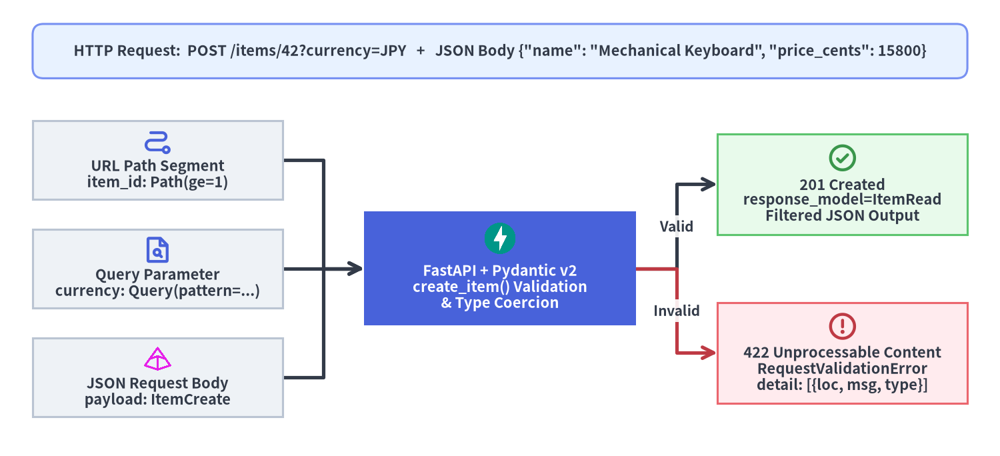

クイックスタートと自動生成 Docs
本ページでは、クリーンな Python >=3.10 環境から出発し、FastAPI v0.162.2 で型安全な Inventory API（在庫管理 API） を構築します。境界での入力検証、複数箇所の違反を一括報告する 422 Unprocessable Content エラー構造、自動生成される OpenAPI 3.1.0 対話コンソール、そして TestClient によるインプロセステストまでを一気通貫で確認します。

1. インストール：標準オールインワン構成 vs 本番最小構成
ローカル開発で CLI やテストツールまで一括導入するか、本番コンテナ向けに最小限の依存関係のみを導入するかに応じて 2 つのプロファイルを使い分けます。
| プロファイル | コマンド | 含まれる主なパッケージと推奨用途 |
|---|---|---|
標準オールインワン（standard） |
uv add "fastapi[standard]" |
fastapi-cli, uvicorn[standard], httpx, pydantic-settings, python-multipart, jinja2, email-validator, opentelemetry-sdk を一括導入 |
| 本番最小構成（Lean Core） | uv add fastapi "uvicorn[standard]" |
FastAPI の 6 つのコア依存パッケージと uvicorn（uvloop + httptools）のみを導入し、軽量な本番イメージを構築 |
# パターン A: 開発・テスト向け標準パッケージ一式（fastapi CLI や TestClient 用 httpx を含む）
uv add "fastapi[standard]"
# パターン B: 本番コンテナ向けの最小ランタイム構成
uv add fastapi "uvicorn[standard]"
# ローカル開発時はループバック（127.0.0.1）に限定して安全に起動
uv run fastapi dev main.py --host 127.0.0.1 --port 8000
2. そのまま動く Inventory API の実装
以下のコードを main.py として保存します。ConfigDict(extra="forbid") により想定外の JSON フィールド混入を境界で拒否し、Annotated と PEP 727 Doc() でバリデーション制約と仕様記述を一体化しています。
from typing import Annotated
from annotated_doc import Doc
from fastapi import FastAPI, HTTPException, Path, Query, status
from pydantic import BaseModel, ConfigDict, Field
app = FastAPI(title="Inventory API", version="1.0.0")
store: dict[int, "ItemRead"] = {}
class ItemCreate(BaseModel):
model_config = ConfigDict(extra="forbid")
name: str = Field(min_length=1, max_length=80)
price_cents: int = Field(gt=0)
tags: list[str] = []
class ItemRead(BaseModel):
id: int
name: str
price_cents: int
currency: str
tags: list[str]
@app.post("/items/{item_id}", response_model=ItemRead, status_code=status.HTTP_201_CREATED)
async def create_item(
item_id: Annotated[int, Path(ge=1), Doc("Unique positive item identifier.")],
payload: ItemCreate,
currency: Annotated[str, Query(pattern="^[A-Z]{3}$"), Doc("ISO 4217 3-letter currency code.")] = "USD",
) -> ItemRead:
record = ItemRead(
id=item_id,
name=payload.name,
price_cents=payload.price_cents,
currency=currency,
tags=payload.tags,
)
store[item_id] = record
return record
@app.get("/items/{item_id}", response_model=ItemRead)
async def read_item(
item_id: Annotated[int, Path(ge=1), Doc("Unique positive item identifier.")],
) -> ItemRead:
if item_id not in store:
raise HTTPException(status_code=status.HTTP_404_NOT_FOUND, detail="Item not found")
return store[item_id]
3. 自動生成される 422 バリデーションエラーの構造
最初のエラー箇所だけで処理を打ち切ると、クライアント側は何度もリクエストを送り直す羽目になります。FastAPI は path・query・body の全入力を一括で検証し、POST /items/0?currency=us に {"name": "", "price_cents": -5} を送信すると、すべての違反箇所を loc 付きで構造化した HTTP 422 Unprocessable Content を返却します。
{
"detail": [
{
"type": "greater_than_equal",
"loc": ["path", "item_id"],
"msg": "Input should be greater than or equal to 1",
"input": "0",
"ctx": {"ge": 1}
},
{
"type": "string_pattern_mismatch",
"loc": ["query", "currency"],
"msg": "String should match pattern '^[A-Z]{3}$'",
"input": "us",
"ctx": {"pattern": "^[A-Z]{3}$"}
},
{
"type": "string_too_short",
"loc": ["body", "name"],
"msg": "String should have at least 1 character",
"input": "",
"ctx": {"min_length": 1}
},
{
"type": "greater_than",
"loc": ["body", "price_cents"],
"msg": "Input should be greater than 0",
"input": -5,
"ctx": {"gt": 0}
}
]
}
4. OpenAPI 3.1 エコシステムと対話型ドキュメント
YAML を 1 行も手書きすることなく、app.openapi() が登録済みの全 APIRoute を走査して OpenAPI 3.1.0 + JSON Schema 2020-12 ドキュメントを合成し、app.openapi_schema にキャッシュします。

GET /openapi.json: API ゲートウェイ、契約テスト、クライアント SDK 自動生成ツール（openapi-tsやopenapi-python-client等）が参照する OpenAPI3.1.0機械可読スキーマです。GET /docs（Swagger UI） &GET /redoc（ReDoc）: ブラウザから即座に試せる対話型コンソールと 3 ペイン仕様書です。外部公開を制限したい本番環境ではFastAPI(openapi_url=None)を指定するか、内部認証の背後に配置して安全に保護できます。
5. TestClient によるインプロセス自動検証
fastapi.testclient.TestClient はネットワークソケットを開かずにメモリ内で直接 ASGI アプリケーションを実行するため、pytest からミリ秒単位で境界契約を検証できます。
from fastapi.testclient import TestClient
from main import app
client = TestClient(app)
def test_inventory_lifecycle() -> None:
ok = client.post("/items/42?currency=JPY", json={"name": "Keyboard", "price_cents": 15800})
assert ok.status_code == 201
assert ok.json()["currency"] == "JPY"
assert client.post("/items/0?currency=us", json={"name": "", "price_cents": -5}).status_code == 422
assert app.openapi()["openapi"].startswith("3.1.")
基本動作を確認できたら、続いて 第 2 章：境界づけられたコンテキストと階層化 で 100,000+ 行規模へスケールさせる設計手法を学ぶか、第 3 章：Path・Query・Header・Cookie・Body で高度なパラメータ検証パターンを深掘りしてください。